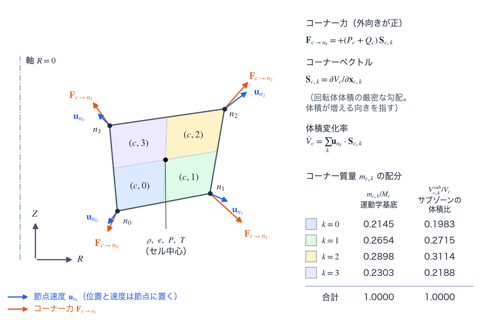

空間離散化
流体の空間離散化として、1D の純ラグランジュ（pure Lagrangian）の球対称セル、2D RZ の四辺形セルと節点の配置、セル質量をコーナーへ配るコーナー質量、運動量の式と内部エネルギーの式を同じコーナー力から作るエネルギー整合（compatible）な力を述べる。この計算に固有の用語（コーナー、サブゾーン、コーナー質量、コーナーベクトル、コーナー力、メディアンメッシュ）は用語の節で説明する。
この計算で使う用語
2D RZ の流体は、四辺形セルの力を節点へ配る単位として、コーナー、サブゾーン、辺を使う。ここに挙げる用語は、エネルギー整合な離散化と TENRYU の実装に固有の意味で使うので、まとめて定義する。以下の記号で、\(c\) はセル、\(k=0,1,2,3\) はセルのコーナー（頂点）の番号、\(n\) は節点である。番号は四辺形の頂点を一周する向きに数え、\(k\pm1\) は隣のコーナーを指す。
コーナー、サブゾーン、コーナー質量、コーナーベクトル、コーナー力
コーナー（corner）は、セル \(c\) と、その \(k\) 番目の頂点にある節点 \(n_k\) の対 \((c,k)\) である。四辺形のセルには 4 個、三角形のセルには 3 個ある。1 つの節点は、それを頂点にもつセルの数だけのコーナーに属し、節点の運動量は、それらのコーナーに働く力の和で決まる。
サブゾーン（subzone）は、コーナー \((c,k)\) に属するセル内の小さな四辺形で、頂点は、節点 \(n_k\)、その両隣の 2 辺の中点、セルの中心（頂点の平均）である。セルは 4 つのサブゾーンに分かれる（図 A の色分け）。サブゾーン \((c,k)\) の回転体体積を \(V^{sub}_{c,k}\) と書き、\(\sum_kV^{sub}_{c,k}=V_c\) である。サブゾーンは、セルの質量と体積を、コーナーごとに割り振る単位である。
コーナー質量（corner mass）\(m_{c,k}\) は、セル質量 \(M_c\) のうちコーナーに割り振った分で、\(\sum_km_{c,k}=M_c\) を満たす。節点の質量（真の RZ 節点質量）は、その節点が属するコーナーの質量の和である。コーナー質量は、節点の慣性と、サブゾーンの密度 \(\rho^{sub}_{c,k}=m_{c,k}/V^{sub}_{c,k}\) の分子になる。配分の規則は設定で決まる。既定（subzonal_pressure_enabled=True の 2D RZ のデッキ、およびマルチブロックメッシュ）では、セル質量をサブゾーンの回転体体積に比例して分け、\(m_{c,k}=M_c\,V^{sub}_{c,k}/\sum_jV^{sub}_{c,j}\) とする。サブゾーン圧力を無効にした構造化（structured）メッシュでは、corner_mass_convention が選ぶ配分を使う（コーナー質量とエネルギー整合な力）。
コーナーベクトル（corner vector）は、コーナー \((c,k)\) の力の向きと大きさを決める、面積に当たるベクトルである。次の 2 種類がある。
体積勾配のコーナーベクトル（volume-gradient corner vector）\(\mathbf S_{c,k}=\partial V_c/\partial\mathbf x_{c,k}\) は、セル \(c\) の回転体体積を、節点 \(n_k\) の位置 \(\mathbf x_{c,k}\) で微分したもので、体積が増える向きを指す。体積重み付きの運動量式が使い、力と体積変化率 \(\dot V_c=\sum_k\mathbf u_{n_k}\cdot\mathbf S_{c,k}\) が同じベクトルを共有する。
平面コーナーベクトル（planar corner vector）\(\mathbf S^A_{c,k}=\tfrac12(z_{k+1}-z_{k-1},\,r_{k-1}-r_{k+1})\) は、R–Z 面で、節点 \(n_k\) の両隣の頂点を結ぶ線分に垂直で、長さがその半分の外向きのベクトルである。頂点は \((r,z)\) 平面で反時計回りに数え、時計回りに並ぶセルでは符号を反転して外向きにそろえる。面積重み付きの運動量式が使う。
コーナー力（corner force）\(\mathbf F_{c\to n_k}\) は、セル \(c\) が節点 \(n_k\) に及ぼす力である。体積重み付きの式では、圧力と人工粘性の寄与が \(\mathbf F_{c\to n_k}=+(P_c+Q_c)\,\mathbf S_{c,k}\) と書け、外向きを正とする。節点 \(n\) の運動量の式は \(m_n\,d\mathbf u_n/dt=\sum_{(c,k)\to n}\mathbf F_{c\to n_k}\)（和は \(n\) に属するすべてのコーナーについて取る）で、セルの内部エネルギーの式は同じコーナー力を使う（エネルギー整合）。サブゾーン圧力の力と辺人工粘性の力も、同じ形のコーナー力として別の配列に保持する。
メディアンメッシュ
メディアンメッシュ（median mesh）は、セル中心と各辺の中点を結ぶ線分が作る補助メッシュである（CSW98 [2] の図 1）。四辺形のセルには 4 本の線分があり、各線分は、隣り合う 2 つのサブゾーンの境界になる。
メディアンメッシュのベクトル（median-mesh vector）\(\mathbf S^{med}_k\) は、セル中心から辺 \(k\to k+1\) の中点への線分に垂直で、大きさがその線分に当たるベクトルである。平面の測度では、線分の長さをもつ。セル中心を \(\mathbf x_c\)、辺の中点を \(\mathbf m_k\) とすると \(\mathbf S^{med}_k=R(-90^\circ)(\mathbf x_c-\mathbf m_k)\) で、\(R(-90^\circ)\) は \(-90^\circ\) の回転、向きは外向きにそろえる。体積重み付きの RZ では、線分を軸のまわりに回してできる面の面積をもつ。サブゾーン圧力の力は、これを使って作る。辺人工粘性の辺ベクトルは、平面では同じベクトルで、RZ では別の作り方をする（辺人工粘性の節）。
エネルギー整合
エネルギー整合（compatible）な離散化は、節点の運動量の式とセルの内部エネルギーの式を、同じ離散的なコーナー力の組から作る方法である（Caramana–Burton–Shashkov–Whalen [1]）。運動エネルギーの変化 \(\sum_n\mathbf u_n\cdot\mathbf F_n\) と、内部エネルギーの変化 \(-\sum_c\sum_k\mathbf F_{c,k}\cdot\mathbf u_{n_k}\) が同じ項の和になるので、全エネルギーは事後の補正なしに、構成上、保存される。
2D RZ のデッキで省略したときの既定は、面積重み付きの運動量式の仕事を、運動量と同じ力から作る設定（aw_compatible_force_work=True）である。これをオフにすると、内部エネルギーは真の RZ 体積変化による \(p\,dV\) で更新され、エネルギー整合でなくなる。辺人工粘性 csw_edge_csw98 は、運動量式の選択によらず、力と仕事を同じ配列から作るエネルギー整合な経路で計算する。
離散化と状態量の配置
1D 球対称では、節点 j に球殻境界の半径 \(r_j\) と動径速度 \(u_j\) を、セル i に密度、イオン・電子の比内部エネルギー、温度、圧力、人工粘性を置く。純ラグランジュ（pure Lagrangian）のセルは質量 \(\Delta M_i\) を一定に保ったまま両端の節点を動かし、\(V_i=4\pi(r_{j+1}^3-r_j^3)/3\) と \(\rho_i=\Delta M_i/V_i\) から密度を求める。したがって、固定された面を通して質量を移流させるのではなく、メッシュそのものが質量座標（mass coordinate）を追跡する。
1D の流体は純ラグランジュである。球対称セルはメッシュの絡まりを起こさず、また緩和は衝撃波をにじませてしまうため、メッシュの再配置（rezone）も状態量のリマップ（remap）も行わない。入力の節 Numerics.ale1d は、受理されるが効果を持たず、enabled=True はエラーになる（1D の ALE は存在しない）。
2D RZ では、軸対称なセルを \((R,Z)\) 子午面（meridional plane）上の四辺形として表す。セル中心の \((\rho,e,P,T)\) を、節点の位置・速度ベクトルと結び付ける。体積重み付き（volume-weighted）の運動量式（volume_weighted）は、回転体としてのセル体積の厳密な勾配である体積勾配のコーナーベクトル \(\mathbf S_{c,k}=\partial V_c/\partial\mathbf x_{c,k}\) を使う。これを、力の組み立てと、連鎖律による体積変化率 \(\dot V_c=\sum_k\mathbf u_{n_k}\cdot\mathbf S_{c,k}\) の双方に用いる。2D RZ の既定である面積重み付きの運動量式（area_weighted_symmetric）は、力に平面コーナーベクトルを使い、仕事には同じ力に \(2\pi r\)（\(r\) は節点の半径）を掛けたものを使う（RZ 運動量スキーム）。以下の式と図 A は、体積重み付きの式の構成を示す。

corner_mass_convention="kinematic_basis_rz_v1" の配分（双一次基底を R で重み付けして集中化したもの）、右の列はサブゾーンの回転体体積の比で、サブゾーン圧力が有効なときの既定の配分である。2 つの配分の値は異なる。コーナー質量とエネルギー整合な力
セル質量を各コーナーへ分配し、節点質量は、その節点に接続するすべてのコーナー質量を決定論的（deterministic）な順序で集めて作る。分配の規則は設定で決まる。サブゾーン圧力を有効にしたとき（2D RZ のデッキで省略したときの既定）とマルチブロックメッシュでは、セル質量をコーナーごとのサブゾーンの回転体体積に比例して分配する。サブゾーン圧力を無効にした構造化メッシュでは、corner_mass_convention が分配を選び、既定の kinematic_basis_rz_v1 は、双一次（bilinear）Q1（4 節点四辺形有限要素）運動学基底（kinematic basis）を R で重み付けして厳密に集中化（lumping）したもので、2×2 のガウス求積（Gauss quadrature）で評価する。
ここで \(N_k(\xi,\eta)\) は基準正方形上のコーナー \(k\) の双一次 Q1 基底関数、\(J\) は基準正方形からセルへの写像のヤコビアン、\(R\) は半径である。各コーナーは、セル質量 \(M_c\) のうち自分の基底の R 重み付き積分に相当する分を受け取る。
この集中化は、任意の双一次四辺形に対して厳密であり、整列した矩形では従来の半径線形 BBSW（Barlow–Burton–Shashkov–Wendroff）集中化に一致し、軸に接する列のセルでは厳密に \([1/6,1/6,1/3,1/3]\) の分配になる。コーナー質量は初期化時に計算し、純ラグランジュ運動のあいだは不変である。サブゾーン圧力が有効なとき、作り直すのはリマップが受理された時点だけである。サブゾーン圧力と砂時計の抑制（hourglass.enabled）のどちらも使わずに ALE を有効にした（Mesh.motion="ale"、Numerics.ale.enabled=True）計算では、毎ステップ、現在の幾何から計算し直す。bbsw_radial_v0 も選択でき、この鍵を持たない古い凍結設定（凍結（freeze）で確定して記録した設定）はこれとして読まれる。この分配は軸上では等分配に退化する。サブゾーン圧力が有効なときの分配は、サブゾーンの回転体体積の比であり、上の集中化とは別の値になる。マルチブロックメッシュは corner_mass_convention の対象外である。
体積重み付きの運動量式では、エネルギー整合なスカラー圧力・粘性の組で、コーナー力と仕事がまったく同じ幾何ベクトルを使う。
$$ \mathbf F_{c\to n_k}=+(P_c+Q_c)\,\mathbf S_{c,k}, \qquad \dot V_c=\sum_k\mathbf u_{n_k}\cdot\mathbf S_{c,k}, $$ $$ \sum_n\mathbf u_n\cdot\mathbf F_n =\sum_c(P_c+Q_c)\dot V_c, \qquad \dot U_c=-\sum_k\mathbf F_{c,k}\cdot\mathbf u_{n_k}. $$- \(\mathbf S_{c,k}\) は回転体体積の厳密な勾配であり、力の組み立て、体積変化率、エネルギー収支の検査が共有する唯一の幾何量である。
kinematic_basis_rz_v1の \(m_{c,k}\) は、双一次 Q1 基底を R で重み付けして厳密に集中化した質量である。軸対称ではコーナーの質量が半径とともに増えるため R で重み付けし、軸に接する列のセルでは厳密に \([1/6,1/6,1/3,1/3]\) となる。ラグランジュ運動のあいだは不変である。- 符号の規約 \(\mathbf F=+(P_c+Q_c)\mathbf S_{c,k}\) は外向きを正とする。\(\mathbf S\) が体積の増える向きを指すためで、圧縮は内部エネルギーに正の仕事をする。
- 随伴の恒等式 \(\sum_n\mathbf u_n\cdot\mathbf F_n=\sum_c(P_c+Q_c)\dot V_c\) が、離散版の全エネルギー保存の言明にあたる。
- \(U_c\) はセルの内部エネルギー [erg]（セル質量と比内部エネルギーの積）である。
- スカラー vNR 粘性は \(\Delta l_c=\sqrt{A_c}\)（\(A_c\) はセルの子午面面積）と、2 次項に対する \(C_2^2\) の規約を用いる。
- CSW98 の Kuropatenko 波速 [3]（式は辺人工粘性の節）は、弱い圧縮では音速に、強い圧縮では強衝撃波の速度に漸近する単一の式である。
CSW98 の辺人工粘性を使うエネルギー整合な経路では、圧力、サブゾーン圧力、辺ごとの人工粘性の力を別々の配列に保持するが、それぞれのエネルギー寄与は、保持した同じ力と同じ時間中心の速度から求める。この離散的な随伴の対が、全エネルギー恒等式の基礎である。
面積重み付きの運動量式（2D RZ の既定）でも、運動量と内部エネルギーの仕事は同じ力の組から作る（RZ 運動量スキーム）。
namelist による制御
以下は Numerics.hydro の主要キーの抜粋である。既定値は、デッキで省略したときの値である。2D RZ のデッキで省略したときと、構造体の既定（C++ のコードで組む Config の値）とで値の違うキーには、両方を書く。Studio は、logical_mesh_2d="polar_in_box" のメッシュを除いて、2D RZ の流体にこの表のキーを書かないので、Studio のデッキは 2D RZ で省略したときの既定で走る。全項目と検証規則は namelist リファレンスを参照のこと。
| キー | 既定値 | 用途 |
|---|---|---|
corner_mass_convention | "kinematic_basis_rz_v1" | 構造化メッシュで、サブゾーン圧力を無効にしたときのコーナー質量の分配。サブゾーン圧力が有効なときとマルチブロックメッシュでは使わない。従来の選択肢は bbsw_radial_v0。 |
boundary_1d | "free" | 1D 外側境界：free、fixed、reflect、pressure。 |
検証
- エネルギー整合な力の試験は、\(\sum \mathbf u\cdot\mathbf F=\sum (P_c+Q_c)\dot V_c\)、外部と切り離した流体計算における運動エネルギーと内部エネルギーの交換、決定論的な集約、マルチブロック接合部の保存を固定する。実運用構成の簡易検査は、記録されたエネルギー残差にも上限を課す。
参考文献
- E. J. Caramana, D. E. Burton, M. J. Shashkov, and P. P. Whalen, "The Construction of Compatible Hydrodynamics Algorithms Utilizing Conservation of Total Energy," J. Comput. Phys. 146, 227–262 (1998). doi:10.1006/jcph.1998.6029
- E. J. Caramana, M. J. Shashkov, and P. P. Whalen, "Formulations of Artificial Viscosity for Multi-dimensional Shock Wave Computations," J. Comput. Phys. 144, 70–97 (1998). doi:10.1006/jcph.1998.5989
- V. F. Kuropatenko, "On Difference Methods for the Equations of Hydrodynamics," in Difference Methods for Solutions of Problems of Mathematical Physics, I, edited by N. N. Janenko (American Mathematical Society, Providence, 1967), p. 116.